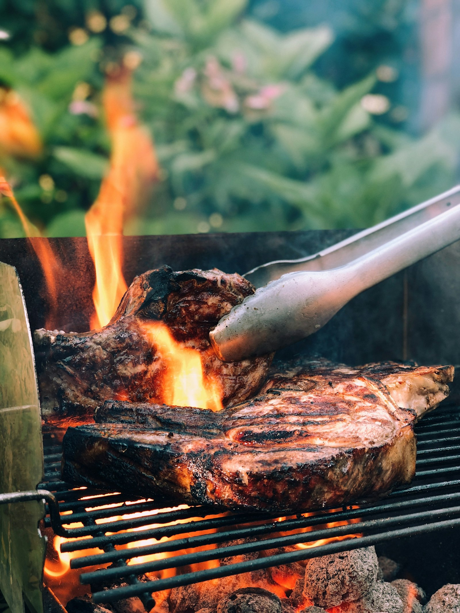
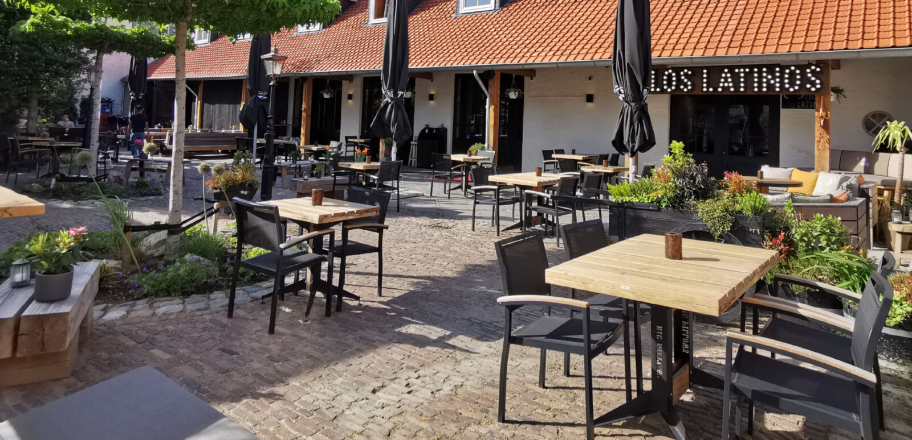
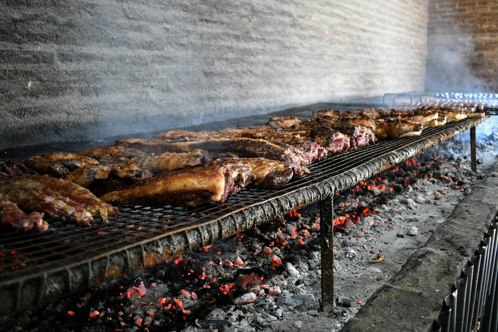
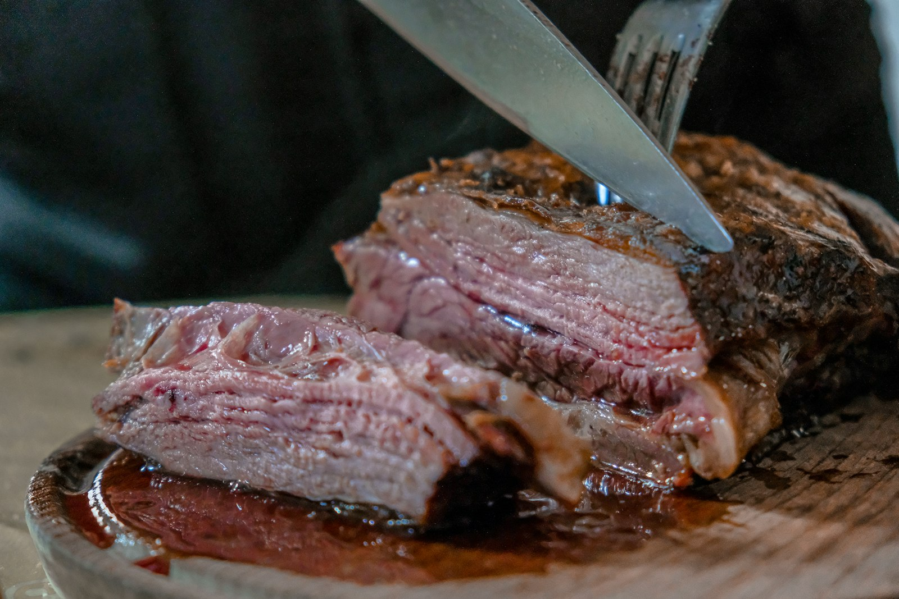
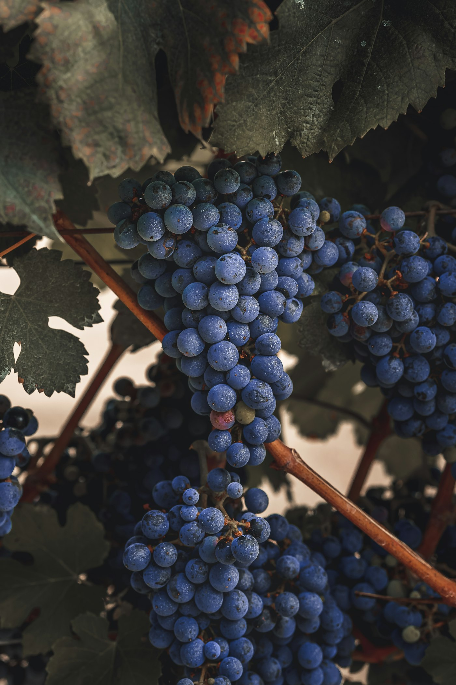

Argentijns grill restaurant in Roosendaal
Los Latinos
The true taste of Argentina
- Elke dag open16:00 tot 22:00 uur
- Raadhuisstraat 55ACentrum Roosendaal
- Sinds 2006Quality steaks
Best steaks sinds 2006
Argentijns op zijn best
Los Latinos heeft een grote reputatie opgebouwd door strikte handhaving van de hoge kwaliteit van het product en door de absolute toewijding bij de bediening van de gasten. Basis van dit alles zijn de beroemde steaks van lekker mals en vakkundig gegrild Argentijns rundvlees.
Onder geen enkele voorwaarde doet Los Latinos concessies aan deze kwalitatieve standaard. Daarom zal Los Latinos ook in de toekomst aan uw hoge verwachtingen kunnen blijven voldoen.


Bereid op onze houtskoolgrill
Heerlijke Argentijnse gerechten
Laat u eens verrassen door onze Argentijnse keuken. U kunt kiezen uit de heerlijkste vlees- en visgerechten. Van Argentijnse steaks tot gamba en van zalm tot entrecôte. Alle gerechten zijn met zorg samengesteld en bereid op onze houtskoolgrill.
Wij verwelkomen u graag in ons restaurant: eenvoudig, vriendelijk en comfortabel. Gelegen in het centrum van Roosendaal en eenvoudig bereikbaar vanuit de regio Breda en Dordrecht. Wij staan 7 dagen per week voor u klaar.
Quality steaks
Bifes, op gewicht
Kies je stuk en je gewicht. Tik op een regel om de prijzen naast elkaar te zien.
| Gewicht | CuadrilLendebiefstukRump steak | ChorizoEntrecôteSirloin steak | LomoOssenhaasFilet steak | AnchoRib-eyeRib eye |
|---|---|---|---|---|
| 200 gr | € 24 | € 28 | € 35 | – |
| 250 gr | € 27 | € 31 | € 40 | – |
| 300 gr | € 30 | € 34 | € 44 | € 39 |
| 400 gr | € 36 | € 40 | € 54 | € 46 |
| 500 gr | € 42 | € 46 | € 65 | € 54 |
| 700 gr | € 54 | € 58 | € 86 | € 70 |
| 1.000 gr | € 77 | € 82 | € 122 | € 98 |
- American Pepper Steak 300 gr€ 36
- American Cheese Steak 250 gr€ 41
- Tomahawk Steak 2 personen, per 100 gram€ 10
Vraag aan één van onze collega’s het exacte gewicht. Ask one of our colleagues for the exact weight.

La carta
We gebruiken alleen verse en zorgvuldig gekozen ingrediënten om al onze authentieke Argentijnse gerechten te bereiden. De steaks op gewicht staan hierboven.
Entradas
Voorgerechten / startersTapas Argentina (2 pers.)
€ 35Gehaktballetjes, vleespasteitjes, worstjes, ribs en wings
Meatballs, meat pies, sausages, ribs and wings
Carpaccio de Carne
€ 15Rundercarpaccio met Parmezaanse kaas
Beef carpaccio with Parmesan cheese
Empanadas
€ 12Argentijnse vleespasteitjes met BBQ-saus
Argentinian meat pies with BBQ sauce
Chorizos
€ 12Gegrilde Argentijnse worstjes met BBQ-saus
Grilled Argentinian sausages with BBQ sauce
Alas de pollo
€ 12Gegrilde kippenvleugeltjes met zoete BBQ-saus
Grilled chicken wings with sweet BBQ sauce
Carpaccio de Salmón
€ 15Zalmcarpaccio, balsamicodressing, pijnboompitjes
Salmon carpaccio, balsamic vinegar, pine nuts
Albóndigas
€ 12Gegrilde gehaktballetjes met BBQ-saus
Grilled meatballs with BBQ sauce
Provolone a la parrilla
€ 12Gegrilde provolonekaas met brood
Grilled provolone cheese with bread
Gambas a la plancha
€ 15Gegrilde gamba’s met paprika en ui
Grilled king prawns with onion and bell peppers
Brocheta de langostinos
€ 14Scampispiesjes met zoete chilisaus
Scampi skewers with sweet chili sauce
Pimiento relleno
€ 12Paprika gevuld met rundergehakt
Sweet pepper stuffed with minced meat
Baguette
€ 3Stokbrood met kruidenboter
Bread with garlic butter
Sopas
Soepen / soupsCarbonada
€ 9Argentijnse goulashsoep
Argentinian goulash soup
Sopa de Camarones
€ 10Romige garnalensoep
Creamy shrimp soup
Sopa Mexicana de Tomates
€ 9Mexicaanse tomatensoep met kip
Mexican tomato soup with chicken
Ensaladas
Salades / saladsEnsalada de Aguacate
€ 12Salade met avocado en appel
Salad with avocado and apple
Ensalada Pollo
€ 12Pikante kipfiletreepjes op salade
Spicy chicken strips on a salad
Platos Combinados
Hoofdgerechten / main coursesSurf & Turf
€ 46Ossenhaas (200 gr) met 3 gamba’s
Tenderloin (200 gr) with 3 grilled prawns
Dos Carnes (± 300 gr)
€ 35Combinatie van ossenhaas en entrecôte
Combination of tenderloin and sirloin
Tres Carnes (± 375 gr)
€ 40Combinatie van ossenhaas, entrecôte en dikke lende
Combination of tenderloin, sirloin and rump
Costillas de Cordero
€ 36Gegrilde lamscarré
Grilled rack of lamb
Pollo a la parrilla
€ 22Gegrilde gemarineerde kipfilet
Grilled marinated chicken fillet
Plato de Pollo
€ 24Kipfiletreepjes met ui en paprika
Chicken strips with onions and bell peppers
Plato Argentina
€ 29Biefstukreepjes met uien en paprika
Steak strips with onions and sweet peppers
Plato Mixto
€ 30Kip- en biefstukreepjes met uien en paprika
Chicken and steak strips with onions and sweet peppers
Plato Vegetariano
€ 22Naar origineel Argentijns recept
To an original Argentinian recipe
Plato Mixto (lomo)
€ 42Kip- en ossenhaasreepjes met uien en paprika
Chicken and fillet strips with onions and sweet peppers
Hamburguesas
BurgersLatinos beef
€ 21100% rundvlees, tomaat, komkommer, sla, ui en burgersaus
100% beef burger, tomato, cucumber, onions, lettuce and burger sauce
Latinos vegetarian
€ 20Vegetarische burger, tomaat, sla, ui, saus
Vegetarian burger, tomato, lettuce, onions, sauce
El Chiquito
KindermenuKeuze uit steak, kip, worstje, frikandel of sparerib
€ 14Geserveerd met frietjes en salade. Kinderijsje inbegrepen.
Costillas de Ternera
Kalfsspareribs / calf ribsCostillas dama
€ 31Zoete of pikante spareribs (één rib)
Sweet or chili ribs (one rack)
Pescado
Vis / fishSalmón
€ 26Gegrilde zalmfilet met ui en paprika
Grilled salmon fillet with onions and bell peppers
Gambas
€ 29Gegrilde gamba’s met knoflook
Grilled prawns with garlic
Brocheta de pez
€ 27Gegrilde visspies met ui en paprika (zalm, kabeljauw en scampi’s)
Grilled fish skewer with onion and bell peppers (salmon, cod and scampi)
Guarniciones
Bijgerechten / side dishesArroz sazonado
€ 4,50Kruidige rijst
Seasoned rice
Cebolla frita
€ 4,50Gefrituurde uien
Fried onions
Porotos hervidos
€ 4,50Warme rode bonen
Warm red kidney beans
Choclo
€ 4,50Maïskolf van de grill
Grilled corn on the cob
Batata
€ 5Zoete-aardappelfrietjes
Sweet potato fries
Vegetales
€ 6Gemengde groenten
Mixed vegetables
Champiñones fritos
€ 6Gebakken champignons, paprika en zoete saus
Pan-fried mushrooms, bell pepper and sweet sauce
Aros de cebolla
€ 6Gefrituurde uienringen
Fried onion rings
Postres
Nagerechten / dessertsDama Blanca
€ 8Vanille-ijs met chocoladesaus en slagroom
Vanilla ice cream with chocolate sauce and whipped cream
Cheesecake
€ 9Op een bodem van crumble met kaneel, met bosvruchtensaus
On a cinnamon crumble base with wild berry sauce
Chocolate moelleux
€ 9Chocoladegebak
Chocolate cake
Sorbet trio
€ 9Torentje van framboos-, citroen- en mangosorbetijs met bosvruchtensaus
Raspberry, lemon and mango sorbet with forest fruit sauce
Café Helado
€ 9Vanille-ijs met Kahlúa-likeur, espresso, karamelsaus en slagroom
Vanilla ice cream with Kahlúa liqueur, espresso, caramel sauce and whipped cream
Piña asada
€ 9Ananas van de grill met vanille-ijs
Grilled pineapple with vanilla ice cream
Crème caramel
€ 9Argentijnse pudding met een laagje karamel
Argentinian custard with a layer of caramel
Grand Dessert
€ 35Crème caramel, cheesecake, kokosijs en chocolate moelleux
Crème caramel, cheesecake, coconut ice cream and chocolate moelleux

Huiswijn
Rood
glas€ 6,25fles 75 cl€ 32Rosé
glas€ 6,25fles 75 cl€ 32Sauvignon Blanc (wit)
glas€ 6,25fles 75 cl€ 32Moezel (zoete witte wijn)
glas€ 6,25fles 100 cl€ 35Prosecco
Citrus, honing, tropisch fruit
glas€ 8fles€ 45
Witte wijnen
Aromo Viognier
Fris, fruitig, aroma’s van oranjebloesem en rijpe abrikozen
glas€ 7,50fles€ 35Salentein Champagne (mousserend)
Licht rosé, appel, citrusfruit
fles€ 39Chardonnay Salentein
Fruitig, sappig, vol
glas€ 9,50fles€ 47
Rode wijnen
Portillo Malbec (Salentein)
Zwart fruit, vleugje kaneel en een pittige afdronk
glas€ 8fles€ 38Portillo Merlot (Salentein)
Soepel, vol, fruitig en een zachte afdronk
glas€ 8fles€ 38Crianza (Rioja, Spaans)
Zwart fruit, pruimen, sandelhout en kokosnoot
fles€ 45Pinot Noir (Salentein)
Kersen, aardbei, vol en fruitig
fles€ 45Broquel Cabernet Sauvignon
Zwarte bessen en kersen
fles€ 45Broquel Malbec
Vol, krachtig en kruidig
glas€ 9,50fles€ 47Salentein Malbec
Krachtig, fruitig en op hout gelagerd
glas€ 9,50fles€ 47Norton Privada
Rond, vol en krachtig
fles€ 59Salentein Single Vineyard San Pablo Malbec
Complex, delicaat en verfijnd
fles€ 81
Onze online prijzen kunnen afwijken van de prijslijst in ons restaurant.
Passie en vakmanschap
Ontmoet onze chef
Dagelijks bereidt onze chef met veel passie en vakmanschap de heerlijkste vleesgerechten op onze houtskoolgrill. Kom eens langs en ervaar zelf de authentieke smaak van onze Argentijnse gerechten.
Reserveren
Reserveer je tafel met het formulier, of bel ons gewoon. We zijn elke dag open van 16:00 tot 22:00 uur.
Bel ons0165 540405 info@loslatinos.nlWerken bij Los Latinos
Een echt familiebedrijf, waar hard gewerkt en nog harder gelachen wordt. Sinds kort zijn we ook leerbedrijf, dus als leerling verwelkomen we jou met open armen.
Medewerker bedieningParttime en fulltime
Voor het gezelligste restaurant van Roosendaal zijn wij op zoek naar een medewerker bediening voor zowel parttime als fulltime functies.
Als medewerker bediening bij Los Latinos ben je gastvrij, leergierig, flexibel en doe je het werk met passie. Bij Los Latinos hebben wij allemaal veel liefde voor het vak en delen we ons enthousiasme met elkaar en onze gasten. Wij zijn een echt familiebedrijf, dat merken onze gasten en medewerkers dan ook. Ons team heeft een open verstandhouding en we kunnen alles met elkaar bespreken. Wij eten gezellig gezamenlijk met z’n allen na werktijd en houden van gezelligheid. Er wordt bij ons hard gewerkt en nog harder gelachen. Ons doel is een warme en prettige werksfeer voor iedereen, zodat niet alleen onze gasten maar ook onze medewerkers tevreden naar buiten gaan.
Wie zijn wij?
Los Latinos bestaat sinds 2006 en daardoor zijn wij een waar begrip in Roosendaal en omstreken. Gasten komen van ver om onze heerlijke grillgerechten te verorberen. Wij zijn gespecialiseerd in gerechten die wij bereiden op de houtskoolgrill en hiermee zijn wij koploper in Roosendaal.
Het doel dat wij als bedrijf hebben is om zoveel mogelijk mensen te laten genieten van onze heerlijke gerechten in een ongedwongen sfeer. Vooral belangrijk is ons gastheerschap en de goed te voelen bourgondische gezelligheid, zodat iedereen zich thuis voelt in ons restaurant. Los Latinos is een paradijs voor vleesliefhebbers. Vakkundig gegrilde steaks zonder poespas, dat is waar wij voor staan.
Tevens zijn wij sinds kort ook leerbedrijf, dus als leerling verwelkomen we jou ook met open armen.
Wat bieden wij jou?
- Een leuke veelzijdige functie binnen het gezelligste team van Roosendaal.
- Flexibele werkdagen, want wij zijn 7 dagen per week geopend, maar wel enkel in de avonduren.
- Een heerlijke en gratis maaltijd na elke dienst.
- Teamuitjes, teambuilding, vakkennis verbreden, inspiratie opdoen in ons vak, uit eten en lunchen met het team.
- Ruimte voor gesprekken, regelmatig besprekingen en overleg.
- Binnen het bedrijf zijn er meerdere doorgroeimogelijkheden, waarvoor wij je kunnen opleiden.
- Goede primaire arbeidsvoorwaarden conform cao.
Wat zoeken wij in jou?
- Jij bent flexibel inzetbaar, zeker in het weekend.
- Horeca-ervaring is geen must, vooral de juiste instelling is belangrijk.
- Jij hebt oog voor onze gasten en ook voor je collega’s.
- Een passie voor eten en drinken.
- Jij bent gewillig om te leren en kennis te verbreden.
- Iemand die net zo blij van Los Latinos wordt als wij!
Spreekt al het bovenstaande jou aan? Mail ons dan naar info@loslatinos.nl en wie weet zien we elkaar binnenkort!
Eerste medewerker bedieningVoor 38 uur of in overleg
Het snelst groeiende restaurant in Roosendaal is op zoek naar een eerste medewerker bediening.
Als eerste medewerker bediening bij Los Latinos heb jij zin om hard te werken, en houd jij in een coördinerende rol overzicht op de vloer. Samen met het team bespreek jij de gang van zaken en kijk je waar wij gezamenlijk kunnen verbeteren.
Jij bent een echte teamplayer en kent de fijne kneepjes van het werken in de horeca. Bij Los Latinos hebben wij allemaal veel liefde voor het vak en delen we ons enthousiasme met elkaar en onze gasten. Een echt familiebedrijf, dat merken onze gasten en medewerkers dan ook. Ons team heeft een open verstandhouding en we kunnen alles met elkaar bespreken. Na het werk eten wij gezellig met z’n allen, want wij houden van gezelligheid. Er wordt bij ons hard gewerkt en nog harder gelachen. Ons doel is een warme en prettige werksfeer te creëren voor iedereen, zodat niet alleen onze gasten maar ook onze medewerkers tevreden naar buiten gaan.
Wie zijn wij?
Los Latinos bestaat sinds 2006 en daardoor zijn wij een waar begrip in Roosendaal en omstreken. Gasten komen van ver om onze heerlijke grillgerechten te verorberen. Wij zijn gespecialiseerd in gerechten die wij bereiden op de houtskoolgrill en hiermee zijn wij koploper in Roosendaal.
Het doel dat wij als bedrijf hebben is om zoveel mogelijk mensen te laten genieten van onze heerlijke gerechten in een ongedwongen sfeer. Vooral belangrijk is ons gastheerschap en de goed te voelen bourgondische gezelligheid, zodat iedereen zich thuis voelt in ons restaurant. Los Latinos is een paradijs voor vleesliefhebbers. Vakkundig gegrilde steaks zonder poespas, dat is waar wij voor staan.
Wat bieden wij jou?
- Flexibele werkdagen in de avonduren, want wij zijn 7 dagen per week geopend.
- Een leuke veelzijdige functie binnen het gezelligste team van Roosendaal.
- Een heerlijke en gratis maaltijd na elke dienst.
- Teamuitjes, teambuilding, vakkennis verbreden en inspiratie opdoen in ons vak.
- Goede primaire arbeidsvoorwaarden conform cao.
- Ruimte voor gesprekken, regelmatig besprekingen en overleg.
- Doorgroeimogelijkheden.
Wat zoeken wij in jou?
- Jij als eerste medewerker bediening bedient de gasten in het restaurant.
- Sterke communicatieve vaardigheden, daar beschik jij over.
- Jij houdt van variatie. Je geniet van de diverse werkzaamheden.
- Graag zou jij meedenken met onder andere de werkroosters en andere personeelszaken.
- Jij hebt oog voor onze gasten en ook voor je collega’s.
Spreekt al het bovenstaande jou aan? Mail ons dan naar info@loslatinos.nl en wie weet zien we elkaar binnenkort!
Bezoek ons
Openingstijden
Alle dagen
16:00 – 22:00
Raadhuisstraat 55A
4701 PM Roosendaal
0165 540405 info@loslatinos.nl Facebook
Route plannen